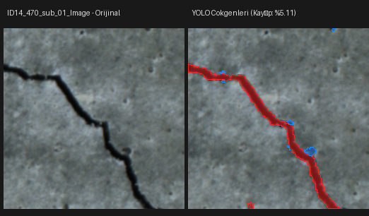
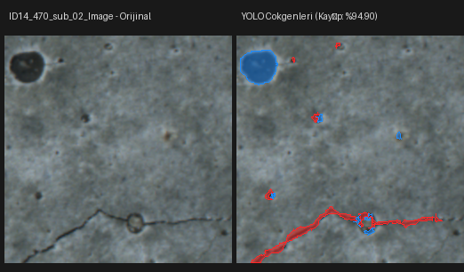
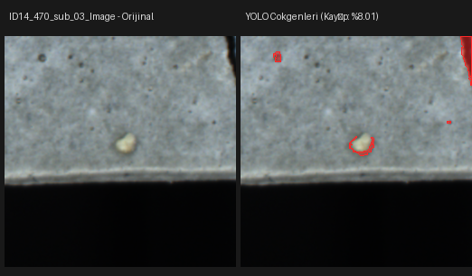
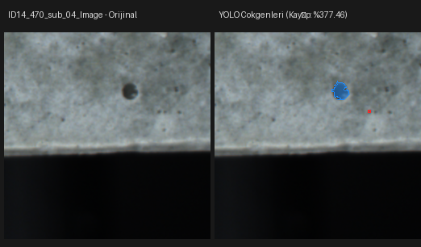
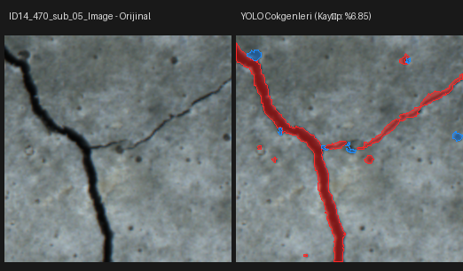
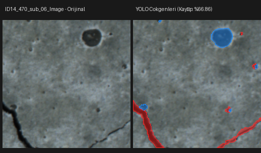

Gerçek mikroskop görüntülerindeki ikili maskeler dış kontur çıkarma yöntemiyle normalize YOLOv8/v11 çokgen etiketlerine dönüştürülmüştür. Numune sızıntısı önlenerek bölmeler oluşturulmuştur.





